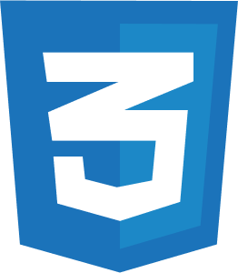

Nike website
IoT >
Opdracht:
Werk 2 verschillende pagina’s van een website uit met ‘nette’ vanilla HTML, CSS en Javascript.
Geleerd:
 HTML5
HTML5- CSS3
- JavaScript
Beschrijving:
De uitwerking voor deze opdracht bestaat uit de homepagina van Nike en een detailpagina van de Jordan x PSG collectie. Tijdens deze opdracht heb ik extra aandacht besteed aan de surface plane.
Zo kan de gebruiker een dark mode instellen, een product op de detailpagina liken en filteren. Ook speelt het lied van PSG af wanneer de gebruiker op de titel 'Lifestyle Paris Saint-Germain' klikt.